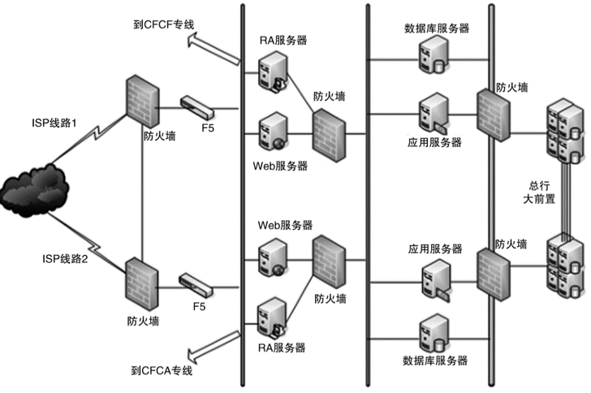
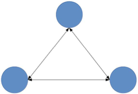
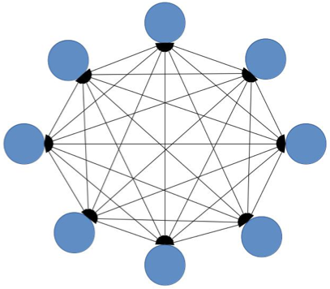

- 00 开篇词 照着做，你也能成为架构师！.md
- 01 架构到底是指什么？.md
- 02 架构设计的历史背景.md
- 03 架构设计的目的.md
- 04 复杂度来源：高性能.md
- 05 复杂度来源：高可用.md
- 06 复杂度来源：可扩展性.md
- 07 复杂度来源：低成本、安全、规模.md
- 08 架构设计三原则.md
- 09 架构设计原则案例.md
- 10 架构设计流程：识别复杂度.md
- 11 架构设计流程：设计备选方案.md
- 12 架构设计流程：评估和选择备选方案.md
- 13 架构设计流程：详细方案设计.md
- 14 高性能数据库集群：读写分离.md
- 15 高性能数据库集群：分库分表.md
- 16 高性能NoSQL.md
- 17 高性能缓存架构.md
- 18 单服务器高性能模式：PPC与TPC.md
- 19 单服务器高性能模式：Reactor与Proactor.md
- 20 高性能负载均衡：分类及架构.md
- 21 高性能负载均衡：算法.md
- 22 想成为架构师，你必须知道CAP理论.md
- 23 想成为架构师，你必须掌握的CAP细节.md
- 24 FMEA方法，排除架构可用性隐患的利器.md
- 25 高可用存储架构：双机架构.md
- 26 高可用存储架构：集群和分区.md
- 27 如何设计计算高可用架构？.md
- 28 业务高可用的保障：异地多活架构.md
- 29 异地多活设计4大技巧.md
- 30 异地多活设计4步走.md
- 31 如何应对接口级的故障？.md
- 32 可扩展架构的基本思想和模式.md
- 33 传统的可扩展架构模式：分层架构和SOA.md
- 34 深入理解微服务架构：银弹 or 焦油坑？.md
- 35 微服务架构最佳实践 - 方法篇.md
- 36 微服务架构最佳实践 - 基础设施篇.md
- 37 微内核架构详解.md
- 38 架构师应该如何判断技术演进的方向？.md
- 39 互联网技术演进的模式.md
- 40 互联网架构模板：存储层技术.md
- 41 互联网架构模板：开发层和服务层技术.md
- 42 互联网架构模板：网络层技术.md
- 43 互联网架构模板：用户层和业务层技术.md
- 44 互联网架构模板：平台技术.md
- 45 架构重构内功心法第一式：有的放矢.md
- 46 架构重构内功心法第二式：合纵连横.md
- 47 架构重构内功心法第三式：运筹帷幄.md
- 48 再谈开源项目：如何选择、使用以及二次开发？.md
- 49 谈谈App架构的演进.md
- 50 架构实战：架构设计文档模板.md
- 51 如何画出优秀的软件系统架构图？.md
- 加餐｜业务架构实战营开营了.md
- 加餐｜单服务器高性能模式性能对比.md
- 加餐｜扒一扒中台皇帝的外衣.md
- 如何高效地学习开源项目 华仔，放学别走！ 第3期.md
- 新书首发 《从零开始学架构》.md
- 架构专栏特别放送 华仔，放学别走！ 第2期.md
- 架构专栏特别放送 华仔，放学别走！第1期.md
- 架构师必读书单 华仔，放学别走！ 第5期.md
- 架构师成长之路 华仔，放学别走！ 第4期.md
- 结束语 坚持，成就你的技术梦想.md
08 架构设计三原则
关于复杂度来源，前面的专栏已经讲了高性能、高可用和可扩展性，今天我来聊聊复杂度另外三个来源低成本、安全和规模。
低成本
当我们的架构方案只涉及几台或者十几台服务器时，一般情况下成本并不是我们重点关注的目标，但如果架构方案涉及几百上千甚至上万台服务器，成本就会变成一个非常重要的架构设计考虑点。例如，A方案需要10000台机器，B方案只需要8000台机器，单从比例来看，也就节省了20%的成本，但从数量来看，B方案能节省2000台机器，1台机器成本预算每年大约2万元，这样一年下来就能节省4000万元，4000万元成本不是小数目，给100人的团队发奖金每人可以发40万元了，这可是算得上天价奖金了。通过一个架构方案的设计，就能轻松节约几千万元，不但展现了技术的强大力量，也带来了可观的收益，对于技术人员来说，最有满足感的事情莫过于如此了。
当我们设计“高性能”“高可用”的架构时，通用的手段都是增加更多服务器来满足“高性能”和“高可用”的要求；而低成本正好与此相反，我们需要减少服务器的数量才能达成低成本的目标。因此，低成本本质上是与高性能和高可用冲突的，所以低成本很多时候不会是架构设计的首要目标，而是架构设计的附加约束。也就是说，我们首先设定一个成本目标，当我们根据高性能、高可用的要求设计出方案时，评估一下方案是否能满足成本目标，如果不行，就需要重新设计架构；如果无论如何都无法设计出满足成本要求的方案，那就只能找老板调整成本目标了。
低成本给架构设计带来的主要复杂度体现在，往往只有“创新”才能达到低成本目标。这里的“创新”既包括开创一个全新的技术领域（这个要求对绝大部分公司太高），也包括引入新技术，如果没有找到能够解决自己问题的新技术，那么就真的需要自己创造新技术了。
类似的新技术例子很多，我来举几个。
- NoSQL（Memcache、Redis等）的出现是为了解决关系型数据库无法应对高并发访问带来的访问压力。
- 全文搜索引擎（Sphinx、Elasticsearch、Solr）的出现是为了解决关系型数据库like搜索的低效的问题。
- Hadoop的出现是为了解决传统文件系统无法应对海量数据存储和计算的问题。
我再来举几个业界类似的例子。
- Facebook为了解决PHP的低效问题，刚开始的解决方案是HipHop PHP，可以将PHP语言翻译为C++语言执行，后来改为HHVM，将PHP翻译为字节码然后由虚拟机执行，和Java的JVM类似。
- 新浪微博将传统的Redis/MC + MySQL方式，扩展为Redis/MC + SSD Cache + MySQL方式，SSD Cache作为L2缓存使用，既解决了MC/Redis成本过高，容量小的问题，也解决了穿透DB带来的数据库访问压力（来源：http://www.infoq.com/cn/articles/weibo-platform-archieture ）。
- Linkedin为了处理每天5千亿的事件，开发了高效的Kafka消息系统。
- 其他类似将Ruby on Rails改为Java、Lua + redis改为Go语言实现的例子还有很多。
无论是引入新技术，还是自己创造新技术，都是一件复杂的事情。引入新技术的主要复杂度在于需要去熟悉新技术，并且将新技术与已有技术结合起来；创造新技术的主要复杂度在于需要自己去创造全新的理念和技术，并且新技术跟旧技术相比，需要有质的飞跃。
相比来说，创造新技术复杂度更高，因此一般中小公司基本都是靠引入新技术来达到低成本的目标；而大公司更有可能自己去创造新的技术来达到低成本的目标，因为大公司才有足够的资源、技术和时间去创造新技术。
安全
安全本身是一个庞大而又复杂的技术领域，并且一旦出问题，对业务和企业形象影响非常大。例如：
- 2016年雅虎爆出史上最大规模信息泄露事件，逾5亿用户资料在2014年被窃取。
- 2016年10月美国遭史上最大规模DDoS攻击，东海岸网站集体瘫痪。
- 2013年10月，为全国4500多家酒店提供网络服务的浙江慧达驿站网络有限公司，因安全漏洞问题，致2千万条入住酒店的客户信息泄露，由此导致很多敲诈、家庭破裂的后续事件。
正因为经常能够看到或者听到各类安全事件，所以大部分技术人员和架构师，对安全这部分会多一些了解和考虑。
从技术的角度来讲，安全可以分为两类：一类是功能上的安全，一类是架构上的安全。
1.功能安全
例如，常见的XSS攻击、CSRF攻击、SQL注入、Windows漏洞、密码破解等，本质上是因为系统实现有漏洞，黑客有了可乘之机。黑客会利用各种漏洞潜入系统，这种行为就像小偷一样，黑客和小偷的手法都是利用系统或家中不完善的地方潜入，并进行破坏或者盗取。因此形象地说，功能安全其实就是“防小偷”。
从实现的角度来看，功能安全更多地是和具体的编码相关，与架构关系不大。现在很多开发框架都内嵌了常见的安全功能，能够大大减少安全相关功能的重复开发，但框架只能预防常见的安全漏洞和风险（常见的XSS攻击、CSRF攻击、SQL注入等），无法预知新的安全问题，而且框架本身很多时候也存在漏洞（例如，流行的Apache Struts2就多次爆出了调用远程代码执行的高危漏洞，给整个互联网都造成了一定的恐慌）。所以功能安全是一个逐步完善的过程，而且往往都是在问题出现后才能有针对性的提出解决方案，我们永远无法预测系统下一个漏洞在哪里，也不敢说自己的系统肯定没有任何问题。换句话讲，功能安全其实也是一个“攻”与“防”的矛盾，只能在这种攻防大战中逐步完善，不可能在系统架构设计的时候一劳永逸地解决。
2.架构安全
如果说功能安全是“防小偷”，那么架构安全就是“防强盗”。强盗会直接用大锤将门砸开，或者用炸药将围墙炸倒；小偷是偷东西，而强盗很多时候就是故意搞破坏，对系统的影响也大得多。因此架构设计时需要特别关注架构安全，尤其是互联网时代，理论上来说系统部署在互联网上时，全球任何地方都可以发起攻击。
传统的架构安全主要依靠防火墙，防火墙最基本的功能就是隔离网络，通过将网络划分成不同的区域，制定出不同区域之间的访问控制策略来控制不同信任程度区域间传送的数据流。例如，下图是一个典型的银行系统的安全架构。

从图中你可以看到，整个系统根据不同的分区部署了多个防火墙来保证系统的安全。
防火墙的功能虽然强大，但性能一般，所以在传统的银行和企业应用领域应用较多。但在互联网领域，防火墙的应用场景并不多。因为互联网的业务具有海量用户访问和高并发的特点，防火墙的性能不足以支撑；尤其是互联网领域的DDoS攻击，轻则几GB，重则几十GB。2016年知名安全研究人员布莱恩·克莱布斯（Brian Krebs）的安全博客网站遭遇DDoS攻击，攻击带宽达665Gbps，是目前在网络犯罪领域已知的最大的拒绝服务攻击。这种规模的攻击，如果用防火墙来防，则需要部署大量的防火墙，成本会很高。例如，中高端一些的防火墙价格10万元，每秒能抗住大约25GB流量，那么应对这种攻击就需要将近30台防火墙，成本将近300万元，这还不包括维护成本，而这些防火墙设备在没有发生攻击的时候又没有什么作用。也就是说，如果花费几百万元来买这么一套设备，有可能几年都发挥不了任何作用。
就算是公司对钱不在乎，一般也不会堆防火墙来防DDoS攻击，因为DDoS攻击最大的影响是大量消耗机房的出口总带宽。不管防火墙处理能力有多强，当出口带宽被耗尽时，整个业务在用户看来就是不可用的，因为用户的正常请求已经无法到达系统了。防火墙能够保证内部系统不受冲击，但用户也是进不来的。对于用户来说，业务都已经受到影响了，至于是因为用户自己进不去，还是因为系统出故障，用户其实根本不会关心。
基于上述原因，互联网系统的架构安全目前并没有太好的设计手段来实现，更多地是依靠运营商或者云服务商强大的带宽和流量清洗的能力，较少自己来设计和实现。
规模
很多企业级的系统，既没有高性能要求，也没有双中心高可用要求，也不需要什么扩展性，但往往我们一说到这样的系统，很多人都会脱口而出：这个系统好复杂！为什么这样说呢？关键就在于这样的系统往往功能特别多，逻辑分支特别多。特别是有的系统，发展时间比较长，不断地往上面叠加功能，后来的人由于不熟悉整个发展历史，可能连很多功能的应用场景都不清楚，或者细节根本无法掌握，面对的就是一个黑盒系统，看不懂、改不动、不敢改、修不了，复杂度自然就感觉很高了。
规模带来复杂度的主要原因就是“量变引起质变”，当数量超过一定的阈值后，复杂度会发生质的变化。常见的规模带来的复杂度有：
1.功能越来越多，导致系统复杂度指数级上升
例如，某个系统开始只有3大功能，后来不断增加到8大功能，虽然还是同一个系统，但复杂度已经相差很大了，具体相差多大呢？
我以一个简单的抽象模型来计算一下，假设系统间的功能都是两两相关的，系统的复杂度=功能数量+功能之间的连接数量，通过计算我们可以看出：
- 3个功能的系统复杂度= 3 + 3 = 6
- 8个功能的系统复杂度= 8 + 28 = 36
可以看出，具备8个功能的系统的复杂度不是比具备3个功能的系统的复杂度多5，而是多了30，基本是指数级增长的，主要原因在于随着系统功能数量增多，功能之间的连接呈指数级增长。下图形象地展示了功能数量的增多带来了复杂度。


通过肉眼就可以很直观地看出，具备8个功能的系统复杂度要高得多。
2.数据越来越多，系统复杂度发生质变
与功能类似，系统数据越来越多时，也会由量变带来质变，最近几年火热的“大数据”就是在这种背景下诞生的。大数据单独成为了一个热门的技术领域，主要原因就是数据太多以后，传统的数据收集、加工、存储、分析的手段和工具已经无法适应，必须应用新的技术才能解决。目前的大数据理论基础是Google发表的三篇大数据相关论文，其中Google File System是大数据文件存储的技术理论，Google Bigtable是列式数据存储的技术理论，Google MapReduce是大数据运算的技术理论，这三篇技术论文各自开创了一个新的技术领域。
即使我们的数据没有达到大数据规模，数据的增长也可能给系统带来复杂性。最典型的例子莫过于使用关系数据库存储数据，我以MySQL为例，MySQL单表的数据因不同的业务和应用场景会有不同的最优值，但不管怎样都肯定是有一定的限度的，一般推荐在5000万行左右。如果因为业务的发展，单表数据达到了10亿行，就会产生很多问题，例如：
- 添加索引会很慢，可能需要几个小时，这几个小时内数据库表是无法插入数据的，相当于业务停机了。
- 修改表结构和添加索引存在类似的问题，耗时可能会很长。
- 即使有索引，索引的性能也可能会很低，因为数据量太大。
- 数据库备份耗时很长。
- ……
因此，当MySQL单表数据量太大时，我们必须考虑将单表拆分为多表，这个拆分过程也会引入更多复杂性，例如：
- 拆表的规则是什么？
以用户表为例：是按照用户id拆分表，还是按照用户注册时间拆表？
- 拆完表后查询如何处理？
以用户表为例：假设按照用户id拆表，当业务需要查询学历为“本科”以上的用户时，要去很多表查询才能得到最终结果，怎么保证性能？
还有很多类似的问题这里不一一展开，后面的专栏还会讨论。
小结
今天我为你分析了低成本给架构设计带来的主要复杂度体现在引入新技术或创造新技术，讨论了从功能安全和架构安全引入的复杂度，以及规模带来复杂度的主要原因是“量变引起质变”，希望对你有所帮助。
这就是今天的全部内容，留一道思考题给你吧。学习了6大复杂度来源后，结合你所在的业务，分析一下主要的复杂度是这其中的哪些部分？是否还有其他复杂度原因？
© 2019 - 2023 Liangliang Lee. Powered by Vert.x and hexo-theme-book.